This section describes the mathematical and program design bases of lignumCAD.
lignumCAD uses three different types of mathematics: geometry, topology and affine spaces. This section gives a brief overview of each of these. The details are developed more fully in later sections. Most of this material is described very well in Computer Graphics: Principles and Practice, James D. Foley, Andries van Dam, Steven K. Feiner and John F. Hughes, Addison-Wesley, 1996. lignumCAD uses the geometry and topology facilities of OpenCASCADE; its documentation is very good. Affine spaces are at the heart of OpenGL, which also has excellent documentation.
The first type of mathematics used in lignumCAD is geometry. Geometry is used to represent the real world surfaces which comprise the computer's model of a piece of furniture. It is easy to represent the results of operations like cross-cutting and ripping on a table saw with a plane (that's the two-dimensional, geometric plane, not the hand plane: Already we're running into difficulties of vocabulary). Geometry in lignumCAD consists of familiar, one- and two-dimensional objects such as lines, circles, planes, cylinders and cones and more complicated types such as splines and b-spline surfaces. In general, geometric objects are indefinite in size. For example, a plane is essentially infinite in both dimensions. A cylinder is bounded in one dimension (the round-and-round) dimension, but it is infinite in the axial dimension.
The second type of mathematics used in lignumCAD goes by the name of topology. Topology describes how geometric objects are connected in order to form solids. In this sense, topology is more like a type of logic than what we would traditionally consider mathematics. For example, the blank board is represented in the program as a rectangular parallelepiped, an RPP. RPP's are composed of six planes with given positions in space. However, as we noted above, planes are infinite entities while the RPP is a finite solid. It is the topology of the RPP which makes it so. Topological solids have these attributes:
A solid is composed of a set of faces which enclose a finite volume of three-dimensional space. A face is a bounded section of an otherwise indefinite supporting geometric surface. In the RPP, each face is based on (i.e., supported by) a plane.
Each face contains a wire which defines the boundary of the face on the supporting geometric surface. In the RPP, the wire on each face is a rectangle.
A wire is composed of a connected series of edges. An edge is a one-dimensional curve which is generate by the intersection of the face's surface with its neighboring faces' surfaces. In the RPP, there are four edges in each face's wire. Note that an edge is always shared by exactly two faces.
There is a vertex at the intersection of each edge. A vertex is always shared by at least three faces.
This figure shows the various topological elements for the RPP.
This representation of solid geometry is usually called a boundary surface representation (BSP).
Together, geometry and topology define the computer's mathematical representation of solid objects. How solids are displayed on the screen is described by the mathematics of affine spaces. The name affine evidently comes from the French word affin, meaning “akin to”. A space in mathematics is a collection of objects (a set) whose properties all meet a given list of requirements (called the axioms of the system). In an affine space, the objects which comprise the set are called points. The definition of an affine space is:
There is an associated vector space.
There is an operation between two points called difference. The difference between two points is an element of the vector space.
There is an operation between a point and a vector called addition. Adding a vector to a point yields another point.
So, what's a vector space? A vector space is a set of objects called vectors, also with two associated operations:
Addition of a vector to another vector.
Multiplication of a vector by a scalar.
These operations must meet some additional criteria (here, lowercase letters represent vectors and uppercase letters represent scalars):
For addition:
It is commutative (i.e., a + b = b + a)
Associative (i.e., a + (b + c) = (a + b) + c)
There must exist an identity vector, i, such that a + i = a.
There must exist an inverse for each vector such that a + b = i. This can also be written as: b = -a.
For multiplication by a scalar:
(A B) a = A (B a), where A and B are scalars.
1 a = a.
(A + B) a = A a + B a
A (a + b) = A a + A b
Note that so far, we have said nothing about what the points and vectors actually are. To borrow a quote from the mathematician David Hilbert (1862-1943): “One must be able to say at all times – instead of points, lines and planes – tables, chairs and beer mugs.” So, as long as we can find some collection of objects which meet these criteria, we have a genuine affine space.
In lignumCAD, we use vector spaces based on 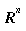, the set of all ordered n-tuples of real numbers. In particular, we use 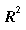, 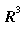 and 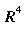. For example, a element of is [0, 42], an element of is [1,2,-3 ½], and an element of is [-2,0,3,1].
What does this have to do with displaying graphics? The basic problem with working with solid geometry on a computer (or paper, for that matter) is that the screen is two dimensional. By defining certain operations on points and vectors, called projection transformations, we can compute the two-dimensional analog of looking at a three-dimensional object.
The vector space (the set of all ordered n-tuples of real numbers) is too abstract a concept for our purposes: We must supply a physical meaning (even if the computer doesn't care). We will assume that each triple represents a location in physical space. In order for this to have meaning, though, we have to specify a metric on which these locations are based. The metric for lignumCAD is based on Euclidean geometry (which, to the best of our knowledge, is the true shape of space). This is also called Cartesian geometry. The fundamental representation of this metric space is the coordinate system. For example, for , we have a two-dimensional coordinate system.

The directed lines which define the locations on the plane are called the x axis and the y axis. The location [0,0] is called the origin.
In three dimensions, the coordinate system looks like this figure.
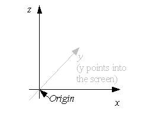
Note that the two-dimensional coordinate system is just the three-dimensional coordinate system for 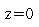.
As discussed above, a point in an affine space is defined as a ordered set of two, three or four values. In lignumCAD, a point is explicitly a position in a two-dimensional or three-dimensional Cartesian coordinate system. The coordinate axes are labeled x, y and z (this was Decartes idea). A point is represented by an uppercase letter with a arrow symbol over it, e.g. a point in three dimensions would be 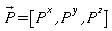. What can you do with a point? Basically, the only operations on points which are allowed are taking the difference between two points, which yields a vector, and adding a vector to a point, which yields a point.
Although they are in some sense subsidiary to points, vectors are substantially more interesting. A vector is represented by a lower case letter with an arrow symbol over it, e.g. . As discussed above, a vector is defined as the difference between two points. In the Cartesian coordinate system interpretation of our affine space, the difference operation means the component-wise difference of the two points. For example, given two points, 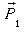 and 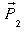, one possible vector is given by 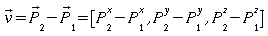. In this case, the vector has one component for each coordinate system axis, so it can be represented as 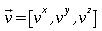.
The scalar length of a vector is given by its Cartesian size: 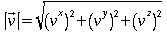. In lignumCAD, vectors are frequently normalized such that they have unit length. Unit vectors are denoted with a hat instead of a vector, e.g. 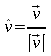. Multiplication or division of a vector by a scalar is defined as component-wise multiplication or division by the scalar.
The scalar dot product of two vectors, 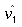and 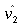, is given by 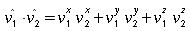. It is a well known result that the scalar dot product of two unit vectors is equivalent to the cosine of the angle between them. Also, the length of a vector is given by the square root of its dot product with itself.
The vector cross product of two vectors, and , is given by 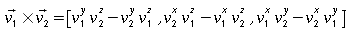.
A (straight) line is defined by an origin, 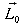, and a normalized direction vector, . Any point on the line is parameterized by the distance from the line's origin: 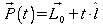 (note how this definition combines everything we know about points and vectors: is defined as the sum of a point and a vector, and the vector is multiplied by a scalar). The tangent vector of a line is just . You can find the parameter for a point on the line by 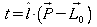.
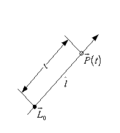
A plane is defined by an origin, , and a normalized normal vector, . Any point, , on the plane satisfies the equation: 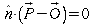. Points on the plane are parameterized by the two coordinates and . In order for these parameters to yield unique positions, an arbitrary, but fixed, two-dimensional coordinate system must be defined on the plane. The plane coordinate system is defined by the orthogonal vectors and 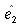. Therefore, any point on the plane may be parameterized by: 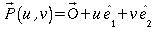. The figure shows a typical plane:
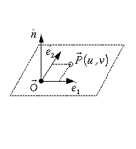
Also, given a point on the plane, the and coordinates are determined by: 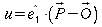 and 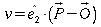.
Consider:
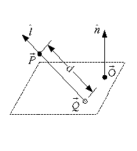
A plane is defined by an origin,
 ,
and a normal,
.
Consider a point,
,
and a vector,
.
What is the distance,
,
and a normal,
.
Consider a point,
,
and a vector,
.
What is the distance,
 ,
from
to the plane in the direction
?
Observe that a point,
,
lies on the plane if it satisfies the equation:
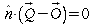.
The line through
in the direction
can be written as a parametric equation in terms of distance from
:
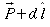.
So, substitute this expression for
in the plane equation and solve for
,
from
to the plane in the direction
?
Observe that a point,
,
lies on the plane if it satisfies the equation:
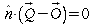.
The line through
in the direction
can be written as a parametric equation in terms of distance from
:
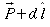.
So, substitute this expression for
in the plane equation and solve for
 .
This yields:
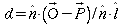
and the point of intersection is:
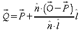.
Note how this expression fails if
is perpendicular to
(i.e.,
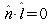).
Of course, if
is perpendicular to
,
then the line
never intersects the plane.
.
This yields:
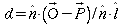
and the point of intersection is:
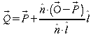.
Note how this expression fails if
is perpendicular to
(i.e.,
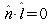).
Of course, if
is perpendicular to
,
then the line
never intersects the plane.
Consider:
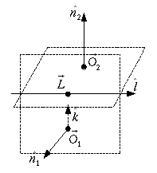
Two planes, and 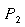, are defined by a pair of origins, , and normals, 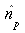. Find a parametric representation of the line of intersection. The direction of the intersection line is simply: 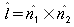. To find a point to use as the origin of the line, we next compute a vector which is normal to both and one of the plane normals, say 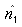. This is simply: 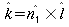.
Now compute
as the projection of
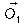
onto
in the direction
 :
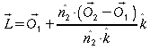.
:
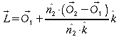.
Although it is a trivial algebraic problem, the intersection of two lines is much more interesting to construct geometrically. Suppose we have two parametric lines, 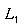 and 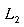:
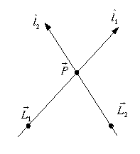
In order for the lines to intersect, two conditions have to hold: 1) they must be coplanar and 2) they must not be parallel. The latter condition simply requires that 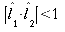. The coplanarity condition is slightly more complicated. In two-dimensions, coplanarity is guaranteed; in three-dimensions, the lines must meet the following criterion: 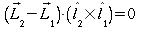. In words, a vector drawn between the two origins of the lines must be normal to the same vector to which both direction vectors are normal. Two specific cases are trivial: 1) if the origin points are coincident, then obviously the two lines intersect, and 2) in two dimensions, the cross product will produce a vector with only a single non-zero component and this component will be zero by definition in the origin points.
To find the point , we want to find the distance, , from 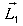 to . Consider this revision to the figure above:
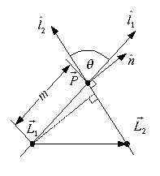
We want to construct the perpendicular from
 through
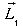,
so we need to find the normal
.
Since
through
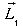,
so we need to find the normal
.
Since
 is not parallel to
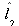,
we can form
as the linear combination of the two direction vectors:
.
Since
is defined as perpendicular to
,
we also have
.
Therefore
.
Because both direction vectors are unit vectors
,
and
.
So, we have
and our perpendicular is
.
We find
is not parallel to
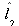,
we can form
as the linear combination of the two direction vectors:
.
Since
is defined as perpendicular to
,
we also have
.
Therefore
.
Because both direction vectors are unit vectors
,
and
.
So, we have
and our perpendicular is
.
We find
 by normalizing
.
Let
,
so we have
and
.
With our substitutions from above we find then
.
So finally,
.
The length of the perpendicular from
through
is
and since it is part of a right triangle, from the definition of the
sine, we have
.
by normalizing
.
Let
,
so we have
and
.
With our substitutions from above we find then
.
So finally,
.
The length of the perpendicular from
through
is
and since it is part of a right triangle, from the definition of the
sine, we have
.
Most of lignumCAD's direct use of affine spaces is confined to OpenGL viewing operations. However, since there is substantial overlap of visualization and geometric modeling mathematics, we will cover some of the basics here.
A transformation (also called a map) is an operation which changes some attributes of an object while leaving other attributes intact. The set of attributes which may change (or not change) can be the empty set. We're interested in linear transformations of vectors, i.e., those transformations which preserve linear combinations of vectors. For example, if is a linear transformation (of an unspecified nature for now), then operating with on a linear combination of vectors is the same as the linear combination of operating on each vector individually. Mathematically, then, we have:
An affine transformation is a type of linear transformation which preserves the affine combination of two points: . We can also define the same map on vectors by setting , where .
We now introduce one of the stranger concepts in this section: In order to represent points in three-dimensional, affine space, it is conventional to use four values. For example, . The obvious question is: Which dimension is w? w doesn't really have a dimension; it is more like a scale factor. Indeed, is not usable as a geometric point until the x, y, z values are divided through by the w component. However, for reasons we will see, it is very convenient to keep this component around until we actually need the geometric value. Furthermore, w is almost always unity so it has no real effect on anything anyway. Indeed, we will assume that w is unity for the rest of this section.
Armed now with our affine points, we can now look at some useful examples of transformations. The first transformation we'll consider is the translation. A translation basically moves a point from one place to another. It is exactly equivalent to adding a vector to a point. The difference here, though, is that instead of writing the translation as a component-wise sum, the translation is expressed as a matrix operation. For example, suppose we have a translation vector . We want to translate the point . By our definitions above, we could write this as: . (Note that in the vector space which corresponds to three-dimensional affine space only has 3 components. Or, to put it another way, the w component of a vector is always zero.)
A completely identical way to express this operation is by using a matrix to represent the translation. For our example, we would have the matrix multiplication:
It is somewhat more clear why the w component is necessary. In order to make this multiplication work like vector addition, you need the extra component.
This representation of translation may seem extravagant; after all, we're replacing three additions by twelve multiplications and twelve additions. However, with this representation, it is very simple to compose an arbitrary sequence of translations. For example, to translate a point first by and then by , it is only necessary to multiply the two matrices together:
The other transformation which is used in lignumCAD is the rotation. A rotation is performed by picking a vector as a reference direction and then twisting the affine space around that direction. Let's consider a two-dimensional example first. Consider this figure where a point is rotated from [4,1] to [1,4]. This is approximately 61.9° about the z axis (which points out of the screen).
The first thing to observe is that we
can express the two points in polar notation. Each point has a radius
vector of
 and angles (measured from the x axis) of
and
.
Also, recall that conversion from polar to Cartesian coordinates is
given by
.
and angles (measured from the x axis) of
and
.
Also, recall that conversion from polar to Cartesian coordinates is
given by
.
Rotating a point given in polar coordinates is very simple; you just add the angle of rotation to the angle of the point. So, rotating into is simply: . However, the goal here is to compute the rotation of without having to compute its polar form. So, we need to write the rotation in terms of itself and the angle of rotation. Recall the angle addition formulas for sine and cosine:
So, we can write as:
which we can write in matrix terms as:

In its most general form, the rotation matrix is given by these elements:
A normalized direction vector .
An angle .
A matrix
Another matrix . Note that , that is times its own transpose, is the dense matrix:
The general rotation matrix is then:
Just as example, consider a rotation around the z axis. In this case and the rotation matrix is:
as expected.
Naturally, if you have a sequence of translations and rotations, you can simply compose all the matrices together and apply the whole sequence with a single matrix multiply.
Most of the value in lignumCAD is in the ability to construct assemblies of parts based on constraining the surfaces of parts. This section describes how transformations are computed for each type of constraint.
(lignumCAD version 0.2 only knows about constraining planes, so this section treats them as if they were the only type of surface available.)
Constraining two subassemblies (either parts or assemblies) with planar faces requires the creation of three constraints. (In the code, these are called phases.) Each successive constraint reduces the number of degrees of freedom of the constrained subassembly. The first constraint computes one translational and two rotational degrees of freedom; the second constraint computes one translational and one rotational degree of freedom; the third constraint completes the last translation degree of freedom.
Each constraint phase consists of three steps:
Selection of a face on the new subassembly. The supporting surface is compared to the characteristic coordinate system of the previous constraint to determine if this surface is valid.
Selection of a face on the existing assembly. The supporting surface is compared to the surface of the first face to determine if it is compatible.
Compute a transformation of the new subassembly's coordinate system which implements the constraint.
The details of the characteristic coordinate system and the transformation are different for each phase. The table below describes each.
|
Phase |
Characteristic Comparison |
Second Face Criterion |
Transformation |
|---|---|---|---|
|
1 |
None – any plane is acceptable |
None – any plane is acceptable |
|
|
2 |
The new subassembly's plane normal must not be parallel to the phase 1 characteristic direction (which is just the normal of the first assembly surface, ) |
The normal of the selected face must make the same angle with the phase 1 characteristic direction as the new subassembly's plane normal. |
|
|
3 |
The new subassembly's plane normal must not be normal to the phase 2 characteristic direction (which is just the normal of the second assembly surface). |
The normal of the selected face must be parallel with the new subassembly's plane normal. |
|
lignumCAD depends on several external packages. See the specific requirements in the Compilation directions.
The basic programming approach of lignumCAD is the Model-View-Controller paradigm. Each C++ class in the program can generally be considered to fall within one of these areas. (And, as with any rule, there are classes which overlap areas and classes which don't really belong to any of them.) The primary classes are those which describe the geometry model. A model consists of a class named Model which collects the set of pages you create. Each page inherits from an abstract class named PageBase. Each page collects a set of figures. Each figure inherits from the an abstract class named FigureBase. The details of figures are less uniform but generally include one or more geometry objects. A simple class diagram for the Model classes is shown below.
In parallel to the model classes are the View classes. The View classes are responsible for displaying the associated model object. The primary view class is DesignBookView. It contains the list of references to the views for each page, which inherit from the abstract PageView class. Each page view contains a list of views of the various figures on the page, which inherit from the abstract FigureView class. DesignBookView largely handles the UI interface and its actions (a prime example of overlap between View and Controller). PageView largely deals with the user's input in the main window. FigureViews generally use OpenGL commands to draw the objects they are viewing.
A somewhat more complete class hierarchy is shown below. The concrete classes Sketch and Part inherit from PageBase. PartView is a concrete PageView. OCSolid is a concrete Figure and OCSolidView is a concrete FigureView. TopoDS_Solid is the OpenCASCADE representation of solid geometry.
The Controller classes inherit from the class InputObject. When the user creates or manipulates an object on the screen, a PageView class will install the proper InputObject to handle the user's interaction with that object.
The classes that don't fall somewhere in the MVC paradigm are generally those which act like global variables. This includes most of the configuration and external information databases. For example, material information (which is read from files when the program starts up) is saved in the MaterialDatabase class. This class follows the Singleton pattern described in the well-known Design Patterns book. Most of the database-like classes follow this pattern.
[link to Doxygen output]